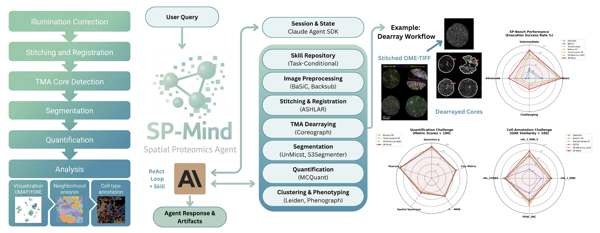
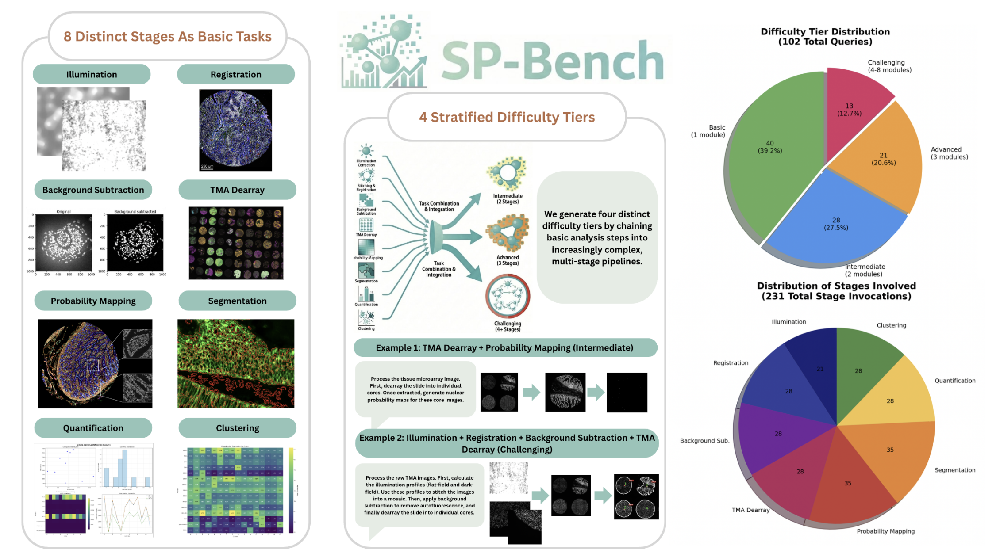

AUTONOMOUS AGENT FOR SPATIAL PROTEOMICS
SP-Mind：把空间蛋白组分析变成可编排的 Agent 工作流
这项工作把大语言模型的任务理解、代码执行、领域技能和容器化空间成像工具连接起来，让研究者可以用自然语言驱动从多轮图像到细胞表型发现的分析流程。
01 · 研究问题与核心贡献
研究定位
SP-Mind 的主要创新不是提出新的细胞分割或蛋白组算法，而是把已有空间蛋白组工具组织成一个由自然语言驱动、具备状态记忆和错误恢复能力的领域 Agent。它解决的是“工具和知识如何被正确编排”的问题。
痛点
空间蛋白组流程跨越配准、背景校正、分割、定量、聚类和表型注释，人工串联工具容易出错且难以复用。
方法
Skill-Augmented ReAct：让模型先读取任务相关技能，再观察数据、选择工具、执行代码并根据结果迭代。
评测
SP-Bench 衡量端到端执行是否完成，同时用量化和细胞注释任务验证下游结果质量。

02 · 方法：Skill-Augmented ReAct 工作流
端到端执行链路
识别目标与约束
加载领域方法模板
构造系统提示
读取日志与产物
输出摘要与文件清单
方法实现的四个关键部件
Reasoning Engine
Claude Sonnet 系列通过 claude-agent-sdk 承担中央编排；系统提示由工作目录、工具签名、data-first 约束和任务 Skill 动态组合。
Skill Repository
技能以 Markdown 模板保存，通过 SKILL_KEYWORDS 按关键词触发；无匹配时回退到基础提示，避免无关上下文稀释。
Python-to-Container Bridge
Python wrapper 统一封装 Docker、Apptainer、Singularity；自动解析输入输出的共同父目录，构造跨主机有效的 bind mount。
Dual-layer State
session_id 保存对话状态；sandbox 文件系统保存 mask、CSV、诊断图和日志，使后续查询可复用既有 artifacts。
ReAct 执行闭环
03 · 空间蛋白组工具链
| 阶段 | 仓库模块 | 后端工具 | 作用与关键风险 |
|---|---|---|---|
| 照明校正 | basic_illumination | BaSiC | 估计 flat-field / dark-field，减少大视野照明不均。 |
| 拼接与配准 | registration | ASHLAR | 处理多 tile、多 cycle 的亚像素级对齐；不能用理论 stage 坐标替代真实配准。 |
| 背景扣除 | background_subtraction | Backsub | 降低自发荧光和背景信号，通常依赖曝光时间等元数据。 |
| TMA 解阵列 | unetcoreograph | UNetCoreograph | 检测并提取组织芯，适合异质性较高的组织微阵列。 |
| 概率图 | segmentation_unmicst | UnMICST | 生成核/细胞概率图，是后续 instance segmentation 的输入。 |
| 细胞分割 | segmentation_s3segmenter | S3Segmenter | 以 marker-controlled watershed 等策略获得核和细胞 mask。 |
| 单细胞定量 | quantification | MCQuant | 从 mask 提取 marker 强度、形态和空间拓扑，输出 CSV。 |
| 聚类/表型 | clustering | Scimap、Leiden、Phenograph | 从表达谱发现群体，并结合规则或技能进行表型判定。 |
| 细胞注释 | 技能引导的 LLM 推理 | — | 根据 marker 表达和领域知识生成语义标签；需要警惕标签漂移和过度解释。 |
04 · 评测设计与结果

SP-Bench 任务构建流程
SP-Bench 九项成功判定标准
调用科学上适合的工具或生成正确代码。
严格使用用户指定的通道、阈值和算法。
正确传递阶段之间的中间产物。
格式、维度、类型和内容满足任务要求。
结果必须保存到指定输出目录。
不修改、删除或覆盖原始输入数据。
无崩溃、运行错误或超过 30 分钟超时。
最终说明只能描述实际完成的操作。
如实报告可恢复和不可恢复的警告/错误。
SP-Bench：执行正确性，而非单一预测分数
成功要求 Agent 使用合适工具或代码、遵守用户参数、保持正确执行顺序和中间数据流、生成规定格式与位置的输出、无运行时错误或超时，并避免意外修改输入目录。任务覆盖 Basic 40、Intermediate 28、Advanced 21、Challenging 13 个查询。
| 难度 | AutoGen | Biomni | Biomni-SP | ToolUniverse-SP | SP-Mind no skill | SP-Mind |
|---|---|---|---|---|---|---|
| Basic | 31.7 | 37.5 | 88.3 | 90.8 | 95.0 | 95.8 |
| Intermediate | 23.8 | 28.6 | 73.8 | 70.2 | 82.1 | 84.5 |
| Advanced | 3.2 | 11.1 | 36.5 | 25.4 | 44.4 | 61.9 |
| Challenging | 0.0 | 0.0 | 23.1 | 15.4 | 28.2 | 33.3 |
| Average | 14.7 | 19.3 | 55.4 | 50.5 | 62.4 | 68.9 |
CRC-CODEX Quantification Challenge
在 10 张高分辨率 CRC-CODEX 图像上比较量化结果。指标采用 segmentation-tolerant 设计，以避免不同分割边界直接造成不公平惩罚。
| Agent | Pearson ↑ | Spearman ↑ | Corr Matrix ↑ | MMD ↓ | Spatial Spearman ↑ |
|---|---|---|---|---|---|
| Biomni-SP | 0.940 | 0.870 | 0.703 | 0.390 | 0.460 |
| ToolUniverse-SP | 0.929 | 0.865 | 0.711 | 0.393 | 0.482 |
| SP-Mind no skill | 0.945 | 0.892 | 0.725 | 0.370 | 0.497 |
| SP-Mind | 0.953 | 0.902 | 0.727 | 0.368 | 0.513 |
Cell Annotation Challenge
在 cHL MIBI、cHL CODEX 和 PDAC IMC 的 4 个数据集、约 200 万细胞上，使用 CyteOnto 的 GHK semantic similarity 评价标签与 ground truth 的语义接近程度。
| 数据集 | AutoGen | Biomni-SP | ToolUniverse-SP | ASTIR | SP-Mind no skill | SP-Mind |
|---|---|---|---|---|---|---|
| cHL_1_MIBI | 0.567 | 0.606 | 0.602 | 0.339 | 0.534 | 0.630 |
| cHL_2_MIBI_5 | 0.616 | 0.663 | 0.655 | 0.258 | 0.672 | 0.765 |
| cHL_CODEX | 0.668 | 0.599 | 0.668 | 0.738 | 0.663 | 0.682 |
| PDAC_IMC | 0.592 | 0.706 | 0.693 | 0.426 | 0.762 | 0.648 |
| Average | 0.610 | 0.643 | 0.654 | 0.440 | 0.657 | 0.681 |
05 · 代码结构、复现与安全审计
spmind.agent核心 Agent：会话管理、技能加载、Claude SDK 调用、工具执行与结果汇总。
核心spmind.tool.*各空间成像阶段的 Python wrapper，底层调用 Docker 或 Apptainer/Singularity 容器。
核心benchmark/SP-Bench 查询、任务生成和评测相关资源。
可复现入口experiments/SP-Bench、细胞注释和细胞定量三条实验轨道的复现脚本与数据说明。
可复现入口run_agent.py单任务运行器：读取 prompt、设置 API、记录完整日志并启动 CLI。
需审查gradio_app.py提供交互式网页界面，维护一个 SPMindAgent 会话并展示聊天结果。
演示层代码工程结构与运行边界
复现条件与差异
- 要求 Python ≥ 3.11、Claude Code CLI 和 Docker 或 Apptainer。
- 论文实验统一使用 Claude Sonnet 4；仓库当前默认模型为 Claude Sonnet 4.5，直接运行不能严格复现论文结果。
- 空间工具本身依赖容器、数据集、硬件资源和第三方许可证；主仓库代码可见不等于全链路环境可立即复现。
- README 提供 Hugging Face 数据下载入口及 benchmark/experiments 说明，适合从公开任务开始复核。
安全边界
--dangerously-skip-permissions 在脚本和快速启动路径中被突出使用，意味着 Agent 可执行 Shell、文件操作和任意生成代码。对真实数据使用时应采用最小权限、只读输入目录、隔离输出目录、容器资源限制和完整日志留存。
06 · 贡献讨论
贡献定位
贡献集中在领域工作流编排、技能知识注入和评测体系，而非基础空间蛋白组算法。这个定位合理，也使系统能够复用成熟工具。
技能是优势也是瓶颈
skill/no-skill 差异说明程序性领域知识重要；但技能由专家人工策划，系统尚未能把成功轨迹自动沉淀为新技能。
执行正确 ≠ 科学正确
SP-Bench 对文件、顺序和输出约束很严格，但“程序成功”仍不保证 marker 解释、细胞类型或生物学结论正确。
评测较完整但仍有限
三条实验轨道覆盖执行、定量和注释；不过基线排除、数据集数量、重复次数、成本、时间、显著性和跨实验室泛化仍应更透明。
跨模态迁移问题
PDAC_IMC 的结果提醒我们：模板中隐含的组织、平台和 marker 假设可能造成负迁移，未来应报告按模态和组织分层的失败率。
07 · 总结与研究启示
SP-Mind 展示了一个有现实价值的方向：在高专业门槛的生物信息学工作流中，LLM 最可靠的落点不是凭空生成科学结论，而是把专家流程、成熟工具、数据检查和错误恢复组合成可审计的执行系统。
适用场景
适合用于探索性空间成像分析、工具链较长的批处理、研究者与分析工程师之间的自然语言接口，以及需要保留中间产物和日志的可重复工作流。
优先发展的方向
- 自动 Skill Synthesis：从成功执行轨迹中提炼并验证新模板。
- 工作流静态检查：在执行前验证输入输出 schema、通道依赖和危险操作。
- 不确定性与人工复核：对分割、注释和生物学解释给出置信度和 review queue。
- 跨平台泛化：按 CODEX、MIBI、IMC、CyCIF 及组织类型报告迁移表现。
- 成本与安全评测：同时报告 token、GPU/CPU、容器时间、失败代价和权限边界。